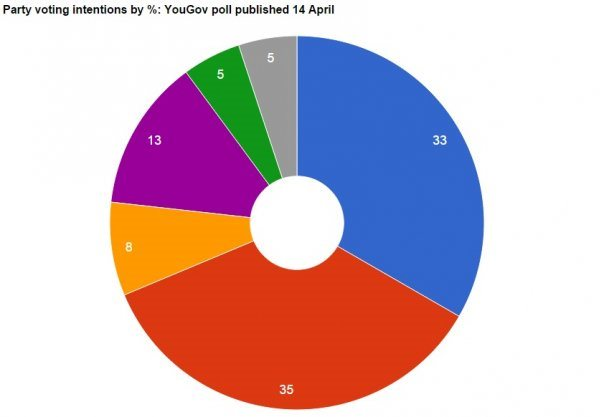

2015-05-02 05:04:00
我在去年九月的《美国的欧洲代理人板块重整》提到英国在2014年做了个外交政略大转弯，从美国在欧洲的代理人变成了中国“在欧洲的最好朋友”。六个月后，英国首相David Cameron以率先加入AIIB做为投名状，用行动证明了他的诚意。既然已经与美国撕破脸，此后当然是义无反顾；这对中共的战略布局有极大的助力。例如IMF若是仍然忽视中国，那么就如AIIB取代了World Bank一样，中共也可以成立一个替代性组织，而举世都会假设英国必然加入。也就是说，光是英国没有照会美国或德国就加入AIIB的先例，已经足够让除了美日的西方国家被预期会争先恐后地支持这个可能的新组织，所以IMF现在才会紧张到准备用史无前例的特殊手段绕过美国的否决权，无论如何必须让人民币在今年底前加入SDR（Special Drawing Rights，这是IMF的合成货币，是世界目前最接近一个理想中的全球货币的美元替代品）。如此不战而屈人之兵，正是中国传统的战略思维。
不过英国的保守党政府在2010年上台之时，做了一个歷史性的改革：原本英国这个议会制老祖宗向来的规矩是一任政府最多可以做五年，新选举的日期却不是确定的；首相在议会任满三年之后，就可以随时决定办选举。所以过去几百年来，议会制下的执政党一直有一个很大的优势，也就是考虑到经济上下波动和民意时好时坏，执政党可以在任期的最后两年中挑最有利的时机来办新选举。像日本的安倍就是怕他的经济政策的恶果即将慢慢浮现，于是在2014年十二月提前两年解散国会，重新获得了另一个完整的任期。这个规则有利于政府与政策的延续和稳定，但是对在野党很不公平，所以Cameron上任之后就把几百年来的传统废除了，改用美国式的定期选举制，下一个选举定在2015年五月7日（提前大选还是可以的，但是必须有2/3下议院同意）。
时光荏苒，2015年转眼就到了。Cameron这任首相虽然没有做得震古烁今，也应该可以算是中上的了。在欧洲的主要经济体中，英国从金融危机復甦得最为成功，过去四年的GDP成长率甚至略高于德国。在外交政略上，Cameron也不是省油的灯，有超人的见识和胆气，一举丢开了旧有的“America's Poodle”（“美国的哈巴狗”）称号，毅然决然地转投新霸主的阵营。但是一般民眾是无知而非理性的，即使在最老牌的民主国家也不例外：不但喜新厌旧是人性的趋向，而且除非是雷根这样的超级作秀大师，否则选民自然而然就会有功不赏、无过照罚（赏罚分明是领袖人才的特质之一；依定义一般民眾就不可能是领袖材料，可是民主制度就偏偏让他们来做最重要的赏罚决定）。Cameron是贵族出身，有点儿书呆子气，对市井小民来说，他是完全谈不上“亲民”的（这是我对民主制度另一个百思不解之处：领袖的责任是为国家做正确的决定，“亲民”和他的适任性有什么关系？反而越是不务正业、拼命作秀的，越是为了遮掩无能或贪腐这类的大问题），所以在选前几周的民意调查里，保守党还是稍微落在工党之后。
2015年四月14日的民意调查结果：蓝色是保守党，红色是工党，橙色是自民党，紫色是独立党，绿色是绿党，灰色是苏格兰国家党。请注意，苏格兰国家党虽然只占全体选民的5%，却因它的支持者集中在一个地区，所以很有可能会拿到约9%的席次。而其他的小党反而因为单一选区制，席位比率会远低于选票比率。
其实在过去几年，英国政坛除了改换选举制度之外，还经歷了史上少有的巨大变局：在左派那方面，原本苏格兰是工党百年来的大本营，但是虽然去年的独立公投失败，新成立的苏格兰国家党（Scottish National Party）今年必然会从工党夺走所有那里的席次，等于把工党一分为二。在右派方面，联合王国独立党（UK Independence Party）靠激进的反欧宣传强势崛起，也应该会把保守党的传统席位一分为二。换句话说，一向在欧洲算是相对稳定、大致由两大党轮流单独执政的英国，也开始转为南欧式的多党分立局面；所以从事后诸葛亮的观点来看，Cameron的选举制改革，时机挑得很糟糕。总而言之，五天后的这场选举有六成的机会是左派获胜，那么工党就必须和苏格兰国家党成立联合政府；保守党的机会有四成，除非不得已，应该会继续与自由民主党（Liberal Democrats）联合主政。
从中共的立场来看，Cameron已经是它“在欧洲的最好朋友”，所以当然他连任是最稳妥的结果。不过Cameron已承诺在2017年举行是否退出欧盟的公投；虽然他个人是反对退出的，但若是保守党内的激进派和联合王国独立党在公投里胜出，则英国对中共的外交价值将会有所缩水。另一方面，如果是工党上台，虽然工党是极度反对退欧公投的，但是苏格兰国家党却会极度希望英国退出欧盟，则苏格兰就会有藉口再搞一次自己的独立公投（还记得我在《无知与短视的后果》里提到的，“和平转变即使是多数决也没有决定性”吗？）。在野的联合王国独立党也会因保守党的下野而靠吸收后者的激进派来继续膨胀，里应外合之下，工党政府是否能一直拒绝公投，实在很难说。不论如何，一个新的工党政府必须与苏格兰国家党做同床异梦的伙伴，那么它在2020年连任的机会就不太大了。此外不但工党领袖Miliband很有可能延续保守党的外交政策，而且Cameron的继任人选非常可能是他的副手，即现任的英国财经总长（Chancellor of The Exchequer）George Osborne。Cameron的亲中政略就是出自Osborne的坚持，而他在2020年可能成为新首相。所以中共在这场选举中，应该没有成为大输家的机会。